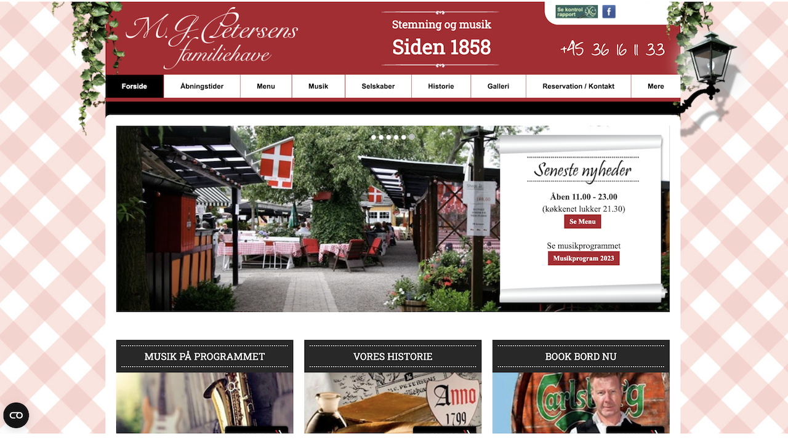
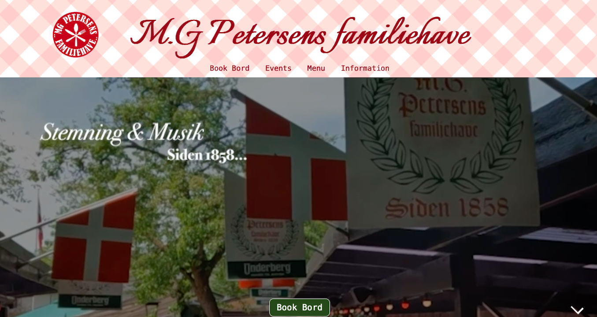

Grundlæggende Indhold
I tema 5 lærte vi det grundlæggende inden for videoproduktion, jeg lærte at benytte Premiere Pro og audition til redigering af videoer. Vi lærte at planlægge vores video shoot ved at lave et storyboard først, hvor man tegner hvert frame man vil filme. Dette gør det nemmere for alle at vide hvad der præcis skal ske under filmningen.
Vi lærte at bruge den viden vi har fået i de forrige temaer til at redesigne et virksomhedssite, vi blev introduceret til GitHub og lærte hvordan man kan kode sammen som gruppe.

Videosite
Vi fik til opgave at finde en person med en passion, interview og filme personen. Julie og mig valgte hendes bror der spiller golf. Vi brugte vores viden fra shooting for the edit ved at planlægge et interview af hendes bror og aftalte at filme ham mens han spillede.
Jeg valgte at klippe min video så man fik nogle få Close up shots af ham mens han snakker og når han kiggede væk fra kameraet, skiftede jeg over til b-rolls. Dette gjorde at det blev en mere sammenhængende fortælling i interviewet.
Klik for at se videositeTemaopgave
Den virksomhed vi valgte at redesigne en hjemmeside til hedder MG petersens familiehave, de har en meget gammeldags og forvirrende side. Vi tænkte at vi ville gøre den mere overskuelig og nem at finde rundt i.
Vi brugte vores viden fra de tidligere temaer i forhold til designproces og brugte Trello til at holde overblik i hvad vi skulle nå. Vi brugte GitHub til at uploade vores fælles kodning så vi kunne holde øje med hvad hinanden lavede.
Klik for at se virksomhedssitet  